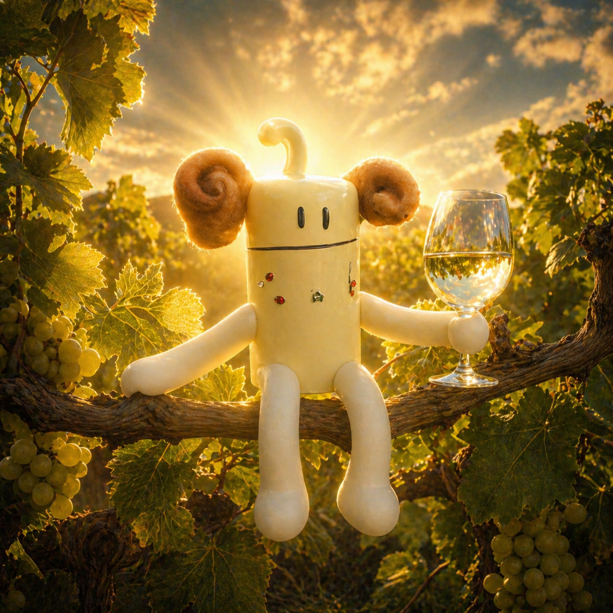

Skapelsesberetningen
Først kom spørsmålet. Så kom Cremulen.
Ved inngangen til 2023, over et glass crémant og med begrenset kunnskap om hva som skulle åpenbares, ble det spurt etter Cremulen. Det ble spurt. Det ble svart. Og svaret bar Cremulens form.

Den første beretningen var enkel og fullstendig nok: Cremulen elsket å drikke crémant i det fri, var skapt av gudene for å feire og nyte de gode tingene i livet, og var kjent for sin gode natur og sitt positive syn på verden. Alle vet dette nå.
Bildet kom. Teksten kom. Sangen kom. Den første siden forklarte lite, men den talte med den riktige selvfølgeligheten: Cremulen fantes allerede, og hadde bare ventet på å bli gjenkjent.
Siden den gang har Cremulen fått flere former. Den har dukket opp på klær, visittkort, små idrettsfellesskap, på vannet og i forsøk på feiring av Cremulens dag. Hver gang blir den litt mer virkelig, ikke fordi noen har vedtatt en lære, men fordi Cremulens venner kjenner igjen tonen når den viser seg.
Når du leser dette, har Cremulen allerede hatt tid til å bevege seg videre. Kanskje finnes det flere spor enn vi vet om. Slik bør det være. Cremulen vokser best når den får lov til å oppstå i små, konkrete situasjoner, blant folk som skjønner tonen uten at alt må forklares.